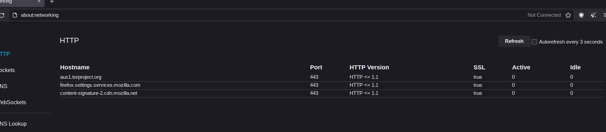

Tor Browser Bundle
Tor is free software and an open network that helps you defend against traffic analysis, a form of network surveillance that threatens personal freedom and privacy, confidential business activities and relationships, and state security.[1] This article is about the desktop Tor Browser Bundle, which is based on Firefox. Tor itself can be used with any browser.
Spyware Level: Low
The Tor browser is a privacy focused web browser that is used to access the internet through the Tor Network. Connections through the Tor network are much more private than normal connections as you do not have an IP address that is associated with you. While spyware services can tell that you are connecting from the Tor network, their ability to identify and profile you is greatly reduced.
Tor Browser has automatic updates, and sends telemetry, albeit over Tor.
If you go to about:networking, you will see several addresses that are affiliated with Mozilla, even before Tor is connected. You can mitigate the spyware, but note that there is a chance that it will be overwritten by future updates.
